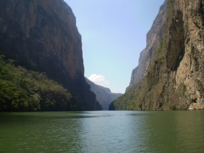
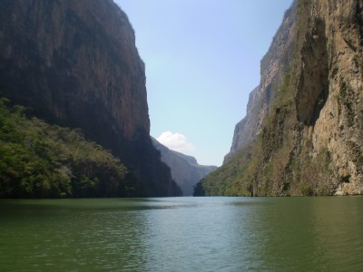

preface-as you can maybe see from the pictures, i still dont know what im doing. hopefully I, or my buddy will be able to make these pictures a bit smaller, on the bright side, at least any senior citizens reading this can see em.March 24, 2007===I write this entry to my loyal readers from 8,000 feet above sea level, where as you might imagine, one beer feels like nine, no really, dont worry, this shouldn’t get out of hand…I am in the town of San Cristobal de las Casas, one of the most beautiful towns I have ever been to. I wish the computers here werent running on flintstone time and i could upload some pictures for the site, but i guess pictures will have to wait until i get back to the States. all be damned, i think i just uploaded a picture, the crazy thing is I hit the upload thing maybe 15 minutes ago and I think it just did it. anyway if it worked, its a picture of the best surfing beach in all of mexico. if it didn’t work, its a picture of me bench pressing 500 lbs, while drinking two beers and surfing a 90 foot wave. wow, i guess you guys have no way of proving it DIDNT happen huhi actually may have just figured out how to post pictures, this is a small miracle people, really it is. thats cause for another beer! dont you all agree?I think I left off last waiting for a bus from Puerto escondido to san cristobal de las casas. i hiked it up to the bus station on top of this massive hill, me being a moron, decided i should hike it up because that will make me tired and more likely to sleep on the bus. bad idea. i nearly killed myself and taxis were honking at me the entire time, as if to say “come on gringo, you know you cant do it, get in my fast cab, we zoom to top of hill in no time”i finally reached the station and got in line for a ticket, these stations are run down, beat up, bugs everywhere-type stations with a static tv that some guy is watching mexico’s version of jerry springer, so a sweet place. the man in front of me was arguing with some ticket lady about how he needs to get to guatemala city by saturday morning or he’s “dpne.” He spoke zero english and constantly asked me for help, saying stuff like, “could you tell this lady how to work her computer in spanish” so im going to help some white dude berate a native, because hes an idiot? nah, hes on his own, he finally pays and leaves in a huff. i buy my ticket, 22 us dollars for a 14 hour ride.entering the bus i see he is on the bus as well, we are going to different cities but he is connecting with us. i already know whats going to happen before it happens. i look down on my ticket, and hes in seat 3 and lucky me in seat 4. now ive met some weird, strange, crazy people in my travels, ari and i once met a guy, 60 or so, in southern croatia who carried a backpack the size a kindergarten kid might carry. we asked him where he was from and he stated with the heaviest russian accent possible, “massachusetts” if that guy was from mass. then im from tanzania. we then asked him where his backpack was he said that was it. we asked him how long he had been traveling for and he stated two years. so crazy boris was number 1 and we have a new number 2…JOHN H. from vancouver.wearing a hawaiian shirt with pure white hair, the entire first two hours of the bus ride he talked about “playing ball” he must have mentioned staying in the game probably 8 times at least. at first i thought he might have been a baseball player, no way. eventually i worked some info out of him, every year he has to go back to canada so the government can “check up on him” he stated he was getting a pension, so i thought maybe he was a govt. worker, he told me he gets a pension from the government for a crime he comitted. is this friggin possible? does the canadian government pay people to committ crimes there? i have some research to do because he said it with the most straight face possible, and i truely believed him.he was harmless, but crazy. and theres no way in hell he’s making it to guatemala city, he is going to get on the wrong bus and end up right back in escondido, i know this.the movie on the bus was terrible and in spanish, so double dinger. it was so low-budget, the chase scenes involved some creepy old guy running after some girl through istanbul. have you been to istanbul? you can buy a car there for 50 bucks. this movie director just decided foot chases were the new “fad” and the movie sucked for it. the second movie was shaggy dog, horrible. the third movie was some space movie with dax shepperd and some kids, basically jumangi in space. do i really have to tell you what i thought of this one as well?i handed my camera to this old mexican man, maybe 60, he picked it up and brought it to his face looking through the extended lens. i showed him which side to look through and as you can see, pure art. he was a real nice guy though.the last night in escondido, i went to a bar on a beach and watched the last king of scotland on a bed sheet tied between two palm trees with people from all over the world, sipping beers, talking about life and watching a pretty cool movie, i thought. theres moments when you are traveling, where you just realize this is what lifes about and this was one of many ive had the past week.i couldnt sleep one damn hour on that bus because of that guy and then because i have no idea. i stumbled into this hostel at 6am and begged the woman to let me in and give me a bed for 4 hours of sleep. she obliged and i was out for the next four hours. after waking, i just cruised aimlessly around san cristobal exploring every street i could, sometimes when you travel, its amazing to just walk around and get lost.the mayans here are beautiful, just beautiful faces, they believe taking a picture is part of their soul leaving their body, so im going to lay off the photos, although i wish you guys could see their beauty. for those who have seen nacho libre with jack black, this is partly where it takes place, there was a concert in the square last night and some teenagers were playing rock music and wearing the masks from that movie that the wrestlers wear, for those who havent seen the movie, you just wasted 15 seconds reading this sentence.
all be damned, i think i just uploaded a picture, the crazy thing is I hit the upload thing maybe 15 minutes ago and I think it just did it. anyway if it worked, its a picture of the best surfing beach in all of mexico. if it didn’t work, its a picture of me bench pressing 500 lbs, while drinking two beers and surfing a 90 foot wave. wow, i guess you guys have no way of proving it DIDNT happen huhi actually may have just figured out how to post pictures, this is a small miracle people, really it is. thats cause for another beer! dont you all agree?I think I left off last waiting for a bus from Puerto escondido to san cristobal de las casas. i hiked it up to the bus station on top of this massive hill, me being a moron, decided i should hike it up because that will make me tired and more likely to sleep on the bus. bad idea. i nearly killed myself and taxis were honking at me the entire time, as if to say “come on gringo, you know you cant do it, get in my fast cab, we zoom to top of hill in no time”i finally reached the station and got in line for a ticket, these stations are run down, beat up, bugs everywhere-type stations with a static tv that some guy is watching mexico’s version of jerry springer, so a sweet place. the man in front of me was arguing with some ticket lady about how he needs to get to guatemala city by saturday morning or he’s “dpne.” He spoke zero english and constantly asked me for help, saying stuff like, “could you tell this lady how to work her computer in spanish” so im going to help some white dude berate a native, because hes an idiot? nah, hes on his own, he finally pays and leaves in a huff. i buy my ticket, 22 us dollars for a 14 hour ride.entering the bus i see he is on the bus as well, we are going to different cities but he is connecting with us. i already know whats going to happen before it happens. i look down on my ticket, and hes in seat 3 and lucky me in seat 4. now ive met some weird, strange, crazy people in my travels, ari and i once met a guy, 60 or so, in southern croatia who carried a backpack the size a kindergarten kid might carry. we asked him where he was from and he stated with the heaviest russian accent possible, “massachusetts” if that guy was from mass. then im from tanzania. we then asked him where his backpack was he said that was it. we asked him how long he had been traveling for and he stated two years. so crazy boris was number 1 and we have a new number 2…JOHN H. from vancouver.wearing a hawaiian shirt with pure white hair, the entire first two hours of the bus ride he talked about “playing ball” he must have mentioned staying in the game probably 8 times at least. at first i thought he might have been a baseball player, no way. eventually i worked some info out of him, every year he has to go back to canada so the government can “check up on him” he stated he was getting a pension, so i thought maybe he was a govt. worker, he told me he gets a pension from the government for a crime he comitted. is this friggin possible? does the canadian government pay people to committ crimes there? i have some research to do because he said it with the most straight face possible, and i truely believed him.he was harmless, but crazy. and theres no way in hell he’s making it to guatemala city, he is going to get on the wrong bus and end up right back in escondido, i know this.the movie on the bus was terrible and in spanish, so double dinger. it was so low-budget, the chase scenes involved some creepy old guy running after some girl through istanbul. have you been to istanbul? you can buy a car there for 50 bucks. this movie director just decided foot chases were the new “fad” and the movie sucked for it. the second movie was shaggy dog, horrible. the third movie was some space movie with dax shepperd and some kids, basically jumangi in space. do i really have to tell you what i thought of this one as well?i handed my camera to this old mexican man, maybe 60, he picked it up and brought it to his face looking through the extended lens. i showed him which side to look through and as you can see, pure art. he was a real nice guy though.the last night in escondido, i went to a bar on a beach and watched the last king of scotland on a bed sheet tied between two palm trees with people from all over the world, sipping beers, talking about life and watching a pretty cool movie, i thought. theres moments when you are traveling, where you just realize this is what lifes about and this was one of many ive had the past week.i couldnt sleep one damn hour on that bus because of that guy and then because i have no idea. i stumbled into this hostel at 6am and begged the woman to let me in and give me a bed for 4 hours of sleep. she obliged and i was out for the next four hours. after waking, i just cruised aimlessly around san cristobal exploring every street i could, sometimes when you travel, its amazing to just walk around and get lost.the mayans here are beautiful, just beautiful faces, they believe taking a picture is part of their soul leaving their body, so im going to lay off the photos, although i wish you guys could see their beauty. for those who have seen nacho libre with jack black, this is partly where it takes place, there was a concert in the square last night and some teenagers were playing rock music and wearing the masks from that movie that the wrestlers wear, for those who havent seen the movie, you just wasted 15 seconds reading this sentence. everyone here has guns it seems, its a lot like israel in that way, the guards who drive the armored cars come out and load their shotguns and then just stand there like they are about to be taken down and ready for battle, a big change from the chris farley look-alikes who do the guard service at your local chase bank.it actually gets very cold in san cristobal at night. last night i went to a bar called “revolucion” what better place to go to a revolution bar in a town where an actual revolution took place? talked with two aussies who were en route from los angeles all the way down to the tip of chile, cool cool people who gave excellent advice seeing as thats the trip i want to take in october. they have traveled everywhere, and aussies do that. they dont have the pressure that US young people have of getting a job right after college, you can work from 30-60 and thats thirty years of work! why work 40? its that simple. the united states is un-real sometimes. but you all know i could lecture on this for hours.in the revolucion bar, ended up hanging with a german going to work on a yacht in spain next month, a bolivian who opened a hostel in san cristobal and a mexican dude just traveling his home country. these are the types of people you meet when you travel. and if i see the german again tonight, theres a good chance from his persuasive skills, i might end up on a yacht in the mediterranean next year.i went on a canyon tour today, met some more cool people, heres a picture. then i must wrap this thing up.there were rumors last night that sub-commodante marcos, the leader of the revolution, who hasnt been seen publicly in a while might come to san cristobal for the first time in years tomorrow…if this happens, i cant really explain the significance, im on this trip because of what he started, to see him, in person, un-real. i wont get my hopes up, the sources were a drunk guy from holland and a waitress. but they are significant rumors.sorry to get so philosophical, traveling does that. its an addiction, and im hooked like an ice-head in a “Dog the bounty hunter’s” episode…check that show out. its one of the few tv shows i watch.i just dropped my camera and caught it mid-air, and on that note…i will write again in 4 or 5 days.from a sandy rooftop, high in the mountains of latin america…backpacker acker
everyone here has guns it seems, its a lot like israel in that way, the guards who drive the armored cars come out and load their shotguns and then just stand there like they are about to be taken down and ready for battle, a big change from the chris farley look-alikes who do the guard service at your local chase bank.it actually gets very cold in san cristobal at night. last night i went to a bar called “revolucion” what better place to go to a revolution bar in a town where an actual revolution took place? talked with two aussies who were en route from los angeles all the way down to the tip of chile, cool cool people who gave excellent advice seeing as thats the trip i want to take in october. they have traveled everywhere, and aussies do that. they dont have the pressure that US young people have of getting a job right after college, you can work from 30-60 and thats thirty years of work! why work 40? its that simple. the united states is un-real sometimes. but you all know i could lecture on this for hours.in the revolucion bar, ended up hanging with a german going to work on a yacht in spain next month, a bolivian who opened a hostel in san cristobal and a mexican dude just traveling his home country. these are the types of people you meet when you travel. and if i see the german again tonight, theres a good chance from his persuasive skills, i might end up on a yacht in the mediterranean next year.i went on a canyon tour today, met some more cool people, heres a picture. then i must wrap this thing up.there were rumors last night that sub-commodante marcos, the leader of the revolution, who hasnt been seen publicly in a while might come to san cristobal for the first time in years tomorrow…if this happens, i cant really explain the significance, im on this trip because of what he started, to see him, in person, un-real. i wont get my hopes up, the sources were a drunk guy from holland and a waitress. but they are significant rumors.sorry to get so philosophical, traveling does that. its an addiction, and im hooked like an ice-head in a “Dog the bounty hunter’s” episode…check that show out. its one of the few tv shows i watch.i just dropped my camera and caught it mid-air, and on that note…i will write again in 4 or 5 days.from a sandy rooftop, high in the mountains of latin america…backpacker acker

|
You are using an insecure version of your web browser. Please update your browser!
Using an outdated browser makes your computer unsafe. For a safer, faster, more enjoyable user experience, please update your browser today or try a newer browser.
|
{kind=link}
{kind=link}